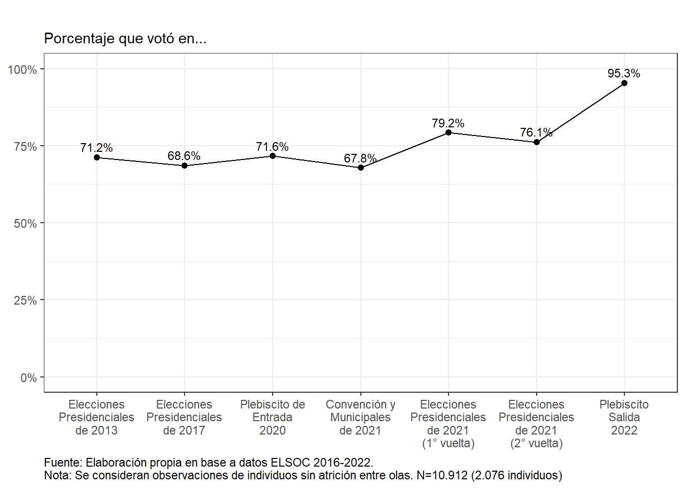
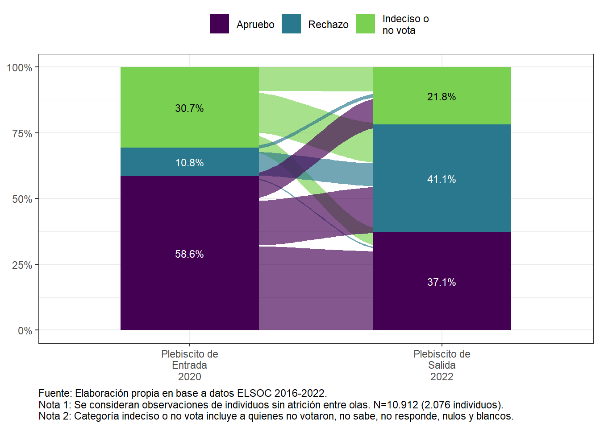
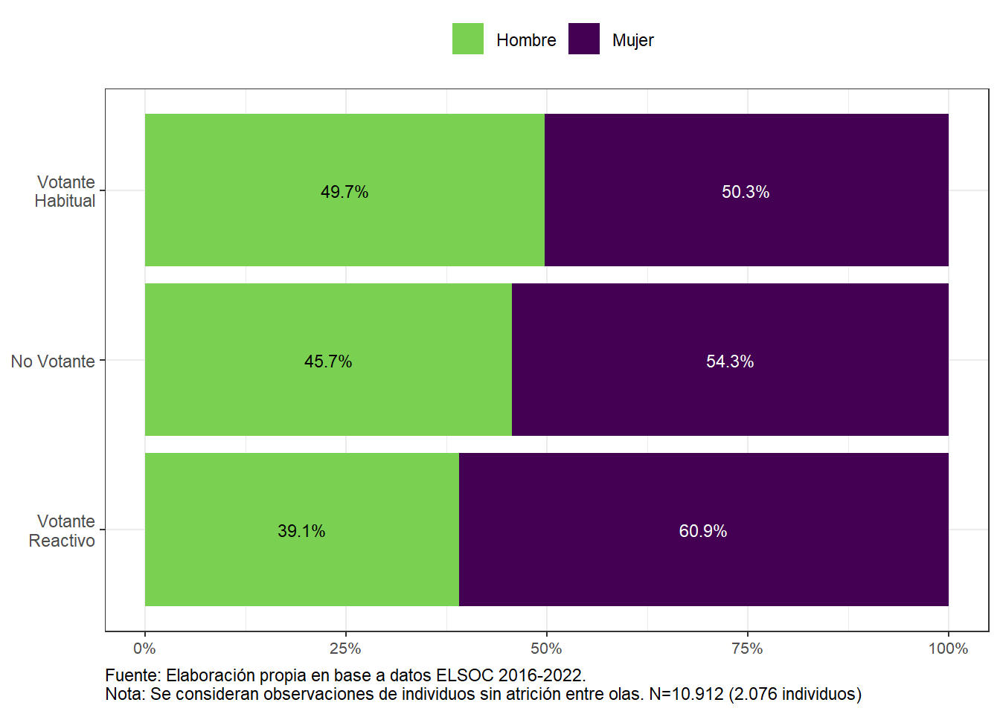
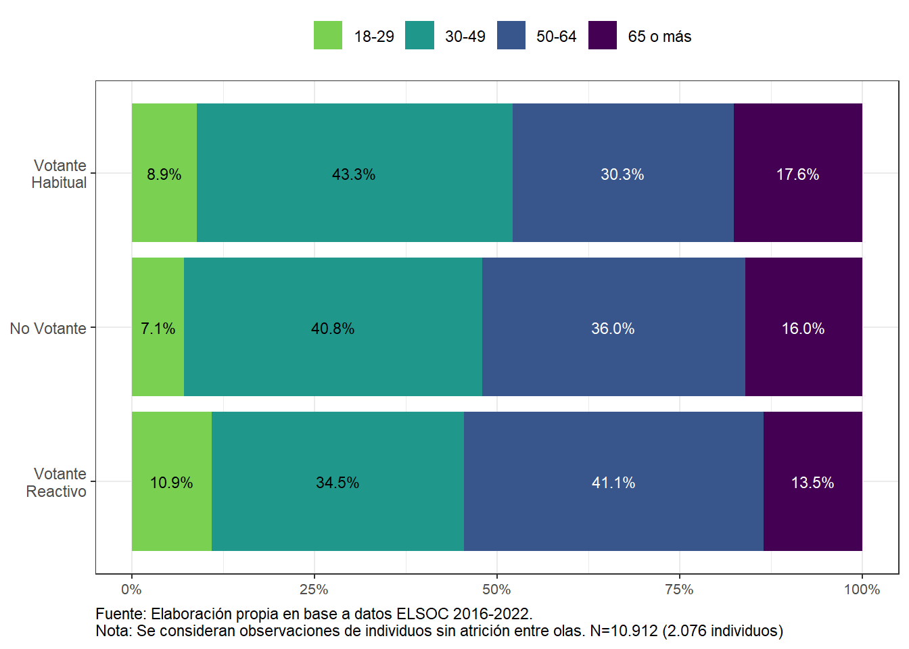
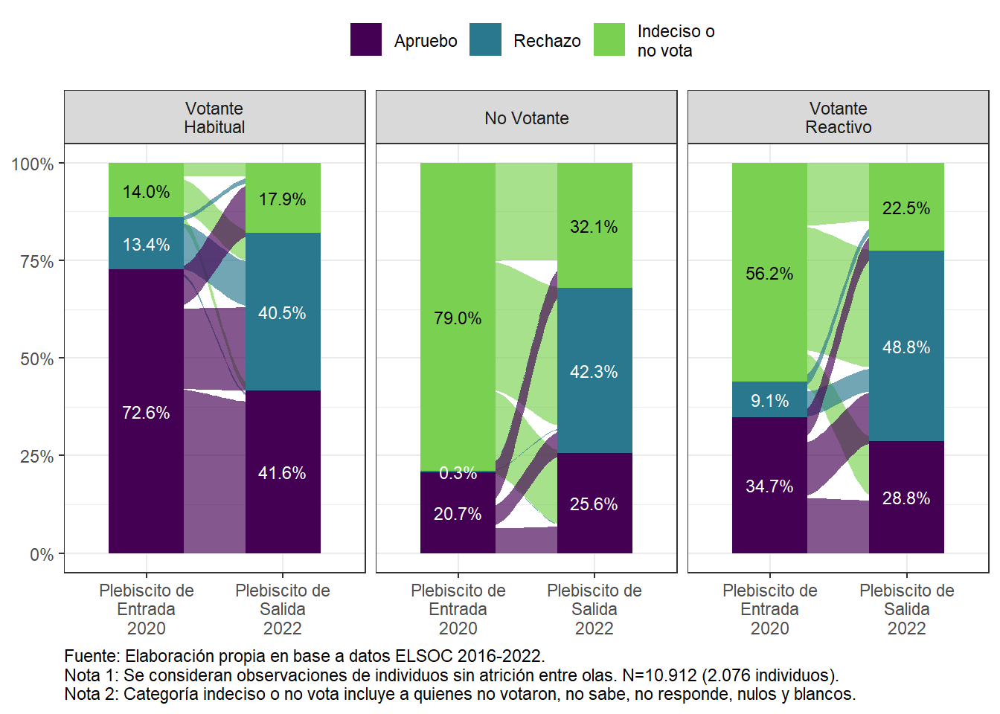
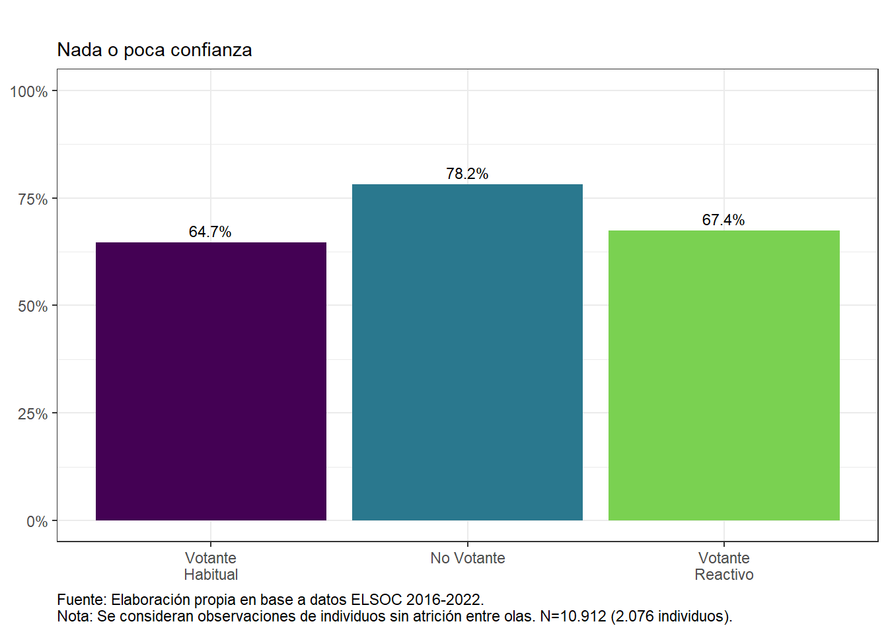
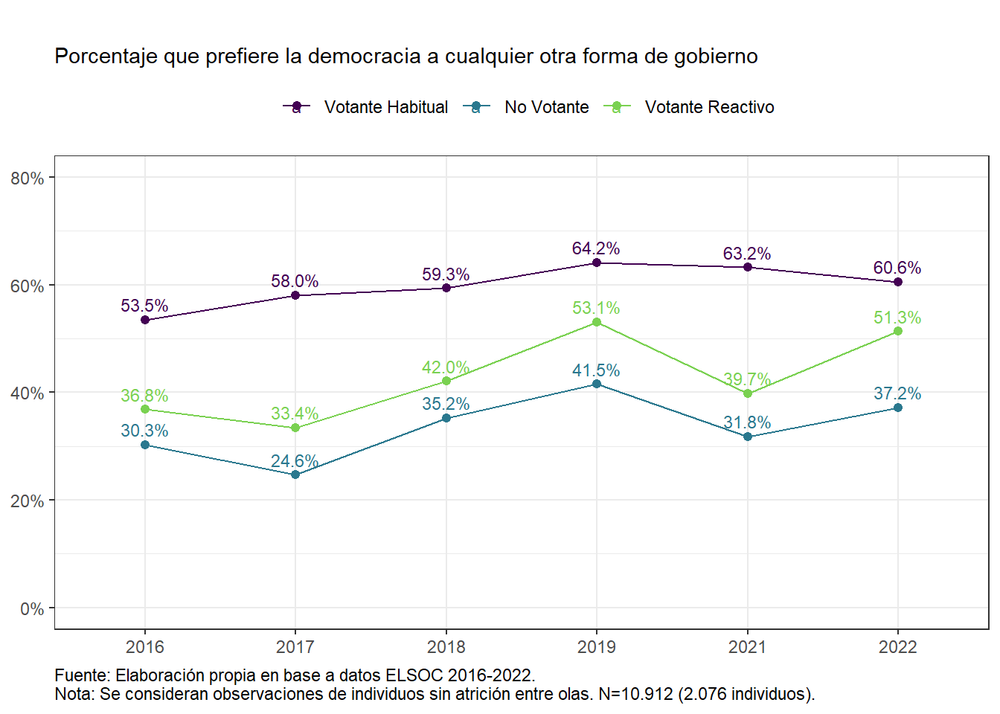
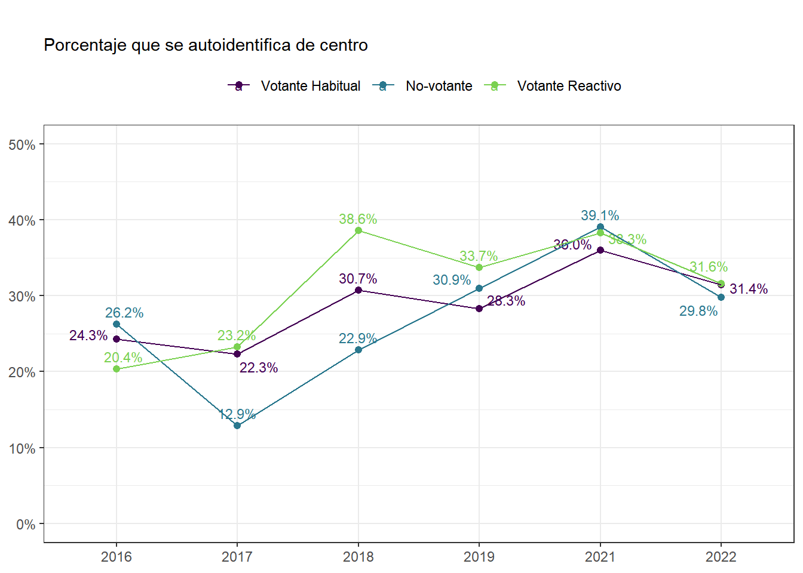
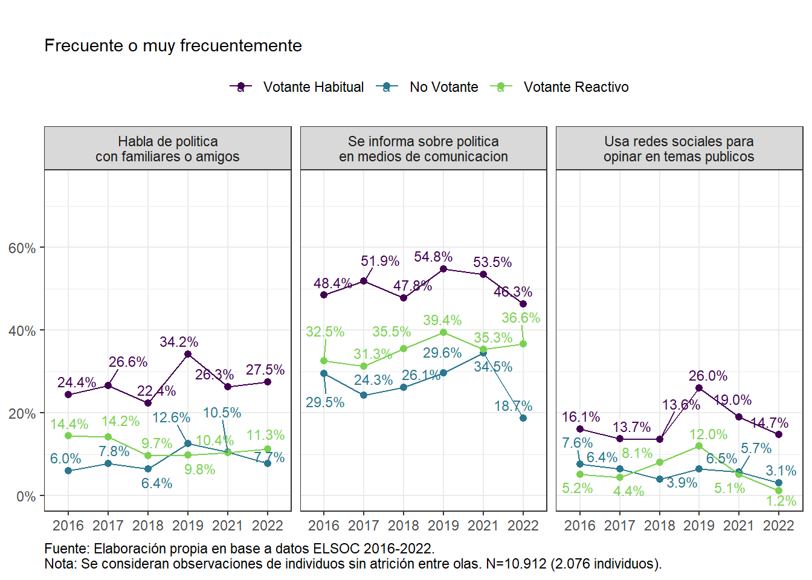
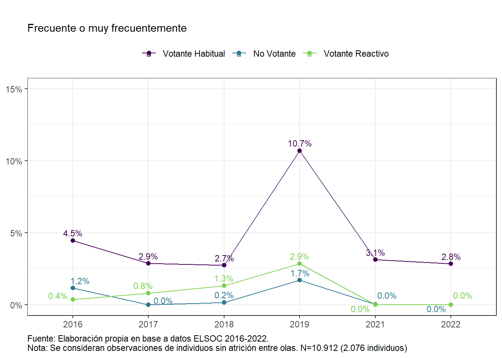

Radiografía del Cambio Social en Chile 2016-2021
1
author: “González, Roberto; Bargsted, Matías; Figuereido, Ana; Miranda, Daniel; Cerda, Edgardo; Plaza, Alejandro; Salas-Lewin, Rocío”
2
Presentación del estudio
2.1
Sobre COES
2.2
Sobre ELSOC
Descripción del estudio
Acceso a Bases de Datos ELSOC
Características del diseño muestral
Características del levantamiento de datos
2.3
Atrición de la muestra
Atrición acumulada según Sexo, Grupo etáreo, Nivel educacional y Estrato
2.4
Foco en el cambio longitudinal
3
Política (nombre temporal)
3.1
Participación electoral y proceso constituyente
3.2
Actitudes hacia la democracia
3.3
Identidad e involucramiento político
3.4
Confianza institucional
3.5
Movilización social
3.6
Opinión pública y contingencia
3.7
Justificación de la violencia
4
Cohesión territorial (nombre temporal)
4.0.1
Conflicto territorial y seguridad
4.0.2
Conflicto indígena
4.0.3
Conflicto migratorio
5
Bienestar (nombre temporal)
Ver fuente
Radiografía del Cambio Social en Chile 2016-2022
Capítulo 3
Política (nombre temporal)
3.1
Participación electoral y proceso constituyente






3.2
Actitudes hacia la democracia

3.3
Identidad e involucramiento político


3.4
Confianza institucional
3.5
Movilización social

3.6
Opinión pública y contingencia
3.7
Justificación de la violencia